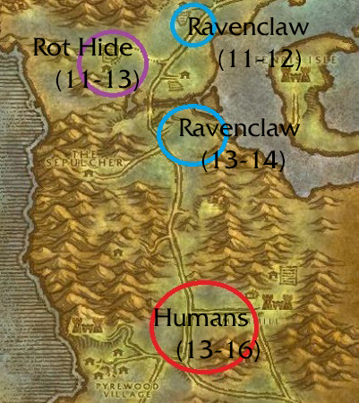
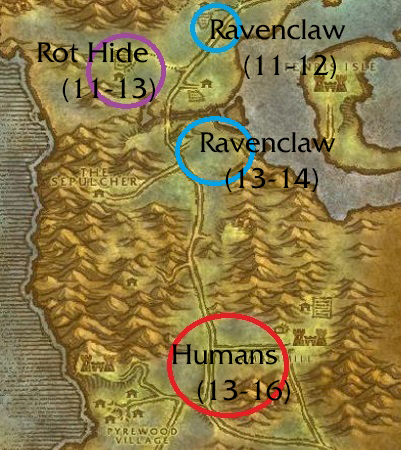
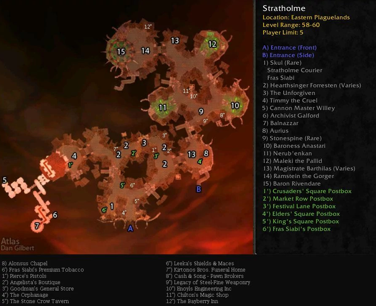
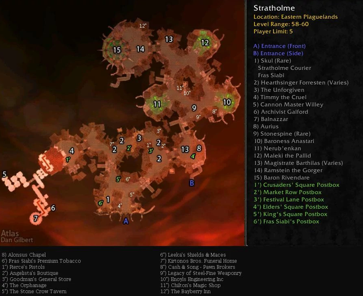

The Hunt for Truefaith Vestments
Truefaith Vestment Farm | Profession TransactionsThe goal!
Getting those reagents
| Reagent | Method of obtaining |
|---|---|
| Bolt of Runecloth | Farm 50+ lvl dungeons for cloth and make. |
| Mooncloth | At 300 tailoring, you can make one Mooncloth per two felcloth used. Requires a recipe from winterspring. |
| Righteous Orb | Obtained from the bosses in Strathome. |
| Golden Pearl | Complete and total genocide of the large turtles of the world for weeks. Killed everything in the water in Azshara: lots of greens but no pearls. Moved to the Hinterlands and finally had one drop my second day. Guildie gave me one, and bought two at about 30g apiece. |
| Ghost Dye | Requires alchemy recipe and to be made by an alchemist. They will need a ghost mushroom. |
| Rune Thread | Bought from tailoring and general goods vendors. Will not be mentioned below. |
Cloth farming
To get to make Bolts of Runecloth and Mooncloth we first must reach 300 tailoring. To do this, follow the above guide to level up the fastest.
Linen Farming: Tirisfal Glades from zombies and humans.
Linen Farming: Silverpine from rot hides,humans, and worgen.

Wool Farming: Stonetalon from venture Co and harpies.
To get to make Bolts of Runecloth and Mooncloth we first must reach 300 tailoring. To do this, follow the above guide to level up the fastest.
Linen Farming: Tirisfal Glades from zombies and humans.
Linen Farming: Silverpine from rot hides,humans, and worgen.
Wool Farming: Stonetalon from venture Co and harpies.
Mooncloth
Gathering the Receipe: Obtained from Qia, the trade goods vendor, in Everlook located in Winterspring.
Gathering the felcloth: The top two farming spots for felcloth would be Felwood and Azshara at locations shown on the map below.


These mobs have about a 4% chance to drop it. Once we have gathered 20 we have all we need to make mooncloth.
Finding the moonwell: To make the mooncloth we need to use a moonwell. The easiest one is likely in Moonglade by the druid trainers.

Gathering the Receipe: Obtained from Qia, the trade goods vendor, in Everlook located in Winterspring.
Gathering the felcloth: The top two farming spots for felcloth would be Felwood and Azshara at locations shown on the map below.
These mobs have about a 4% chance to drop it. Once we have gathered 20 we have all we need to make mooncloth.
Finding the moonwell: To make the mooncloth we need to use a moonwell. The easiest one is likely in Moonglade by the druid trainers.
Righteous Orbs
Gathering the orbs: The orbs drop off elite crimson scarlet crusaders in living side of Strathome. (The LEFT SIDE)

Gathering the orbs: The orbs drop off elite crimson scarlet crusaders in living side of Strathome. (The LEFT SIDE)
Golden Pearl
Gathering the pearls: Perhaps the hardest regent to obtain, the pearls drop either from a Red Sack of Gems (45%) or a Big-mouth clam (0.6%).
Red Sack of Gems approach: These drop from raid bosses and world bosses with highest varient in phase 1, Nefarian, at 5%.
Big-mouth clam apprach: These drop from various mobs like Murlocks, turtles, crabs, Naga, and Sea Giants, located in Azshara, Dustwallow Marsh, Feralas, ST, and Swamp of Sorrows.
Gathering the pearls: Perhaps the hardest regent to obtain, the pearls drop either from a Red Sack of Gems (45%) or a Big-mouth clam (0.6%).
Red Sack of Gems approach: These drop from raid bosses and world bosses with highest varient in phase 1, Nefarian, at 5%.
Big-mouth clam apprach: These drop from various mobs like Murlocks, turtles, crabs, Naga, and Sea Giants, located in Azshara, Dustwallow Marsh, Feralas, ST, and Swamp of Sorrows.
Ghost Dye
Recipe: An alchemist can make this dye from two Ghost Mushrooms, purple dye, and a crystal vial.
Ghost Mushroom Since purple dye and a crystal vial can be purchased from common vendors, the only farmable regent is the ghost mushrooms. These are located in the Hinterlands and Descolace as well as dropped from Mauradon bosses at an average of (11.2%).
Secret: There is Fungal Rock in Un'Goro Crater that may prove to be the best farming spot for a herbalist.
Recipe: An alchemist can make this dye from two Ghost Mushrooms, purple dye, and a crystal vial.
Ghost Mushroom Since purple dye and a crystal vial can be purchased from common vendors, the only farmable regent is the ghost mushrooms. These are located in the Hinterlands and Descolace as well as dropped from Mauradon bosses at an average of (11.2%).
Secret: There is Fungal Rock in Un'Goro Crater that may prove to be the best farming spot for a herbalist.